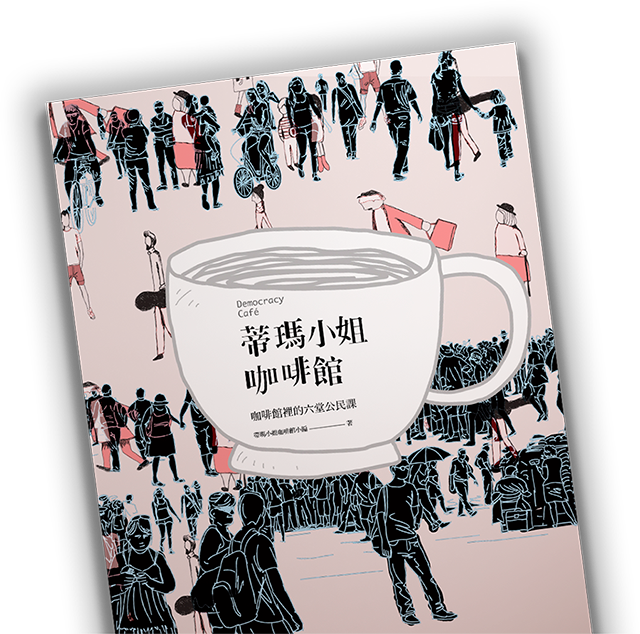

蒂瑪小姐咖啡館
咖啡館裡的六堂公民課

空服員為何罷工？一例一休不好嗎？
政治關我什麼事？臺灣真的民主嗎？
我們是好國好民，一起來上咖啡館裡的公民課，
進行民主的對話練習。
要把一個公眾議題的前因後果、完整背景講清楚，需要花費數小時，但要扭曲一個公眾議題的訴求，只需要數分鐘。對於社會議題、政府運作制度的不夠了解，正是阻礙一般民眾針對公共議題做深入討論、讓政治討論淪於八卦口水的主因，然而忙碌的現代人往往為了餬口已經耗去大半時間，還有心力去了解這些重要議題嗎？
我們嘗試用貼近生活的例子，在小說對話體中探討新聞事件背後所延伸的制度問題，幫助大家了解重要議題，引導思考、討論議題背後的意義。一篇一主題的分量，只要花費短短幾分鐘，幫助突破思維盲點。
「什麼是民主？」，這個問題，在寫作的過程中我們不斷的自問，至今仍無法有個簡單的答案，但可以確認的是，當我們每個人可以在溝通與對話中逐漸形成未來的願景，從討論中激發公民行動，那麼，我們才能真正離民主更近一步。
本書版稅將全部用於國會調查兵團計畫。國會調查兵團在做什麼？